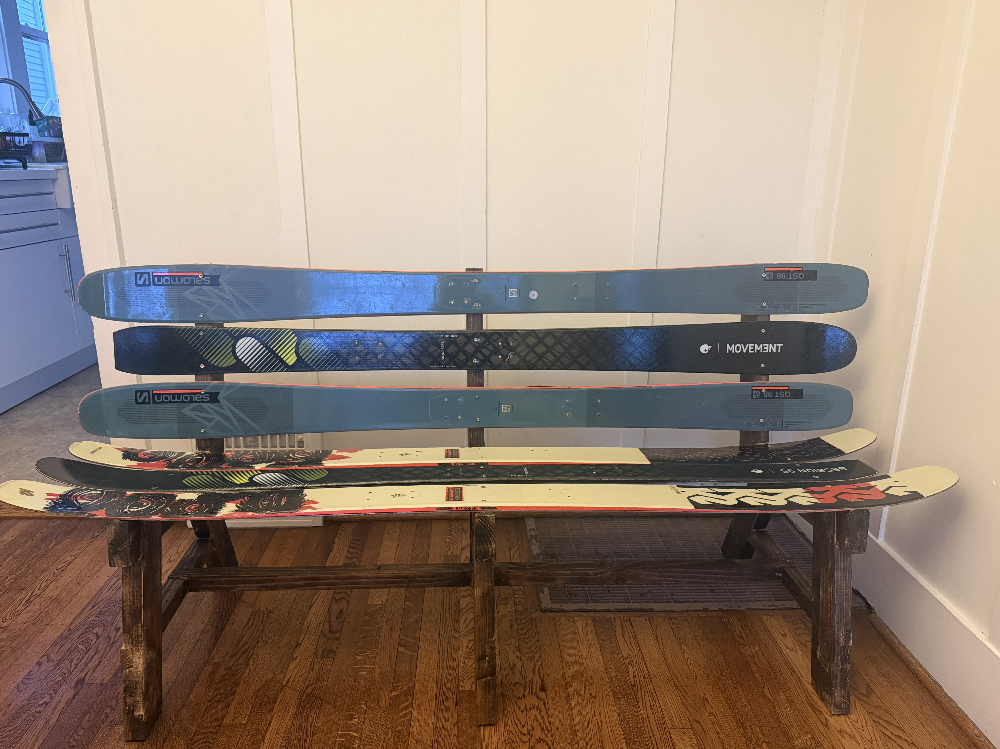
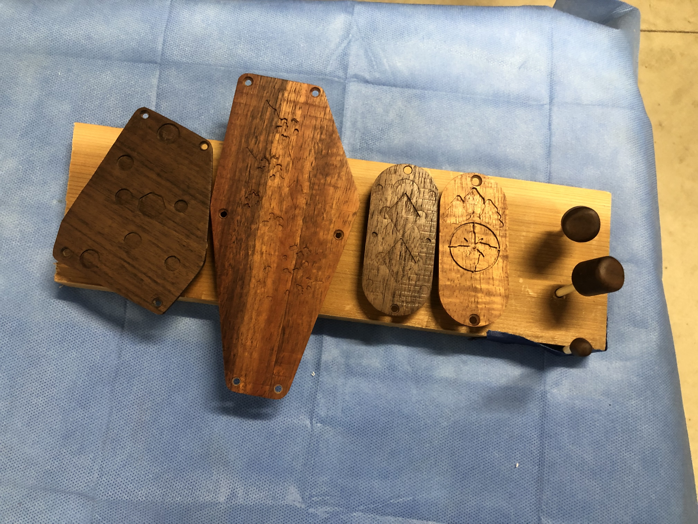
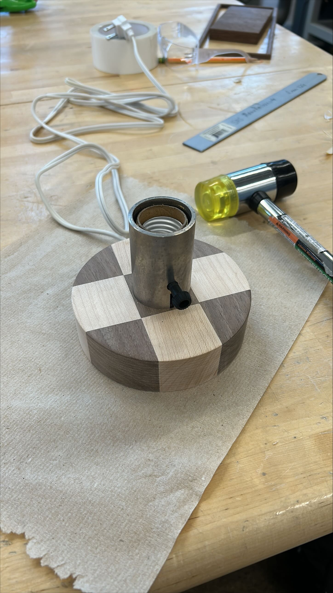
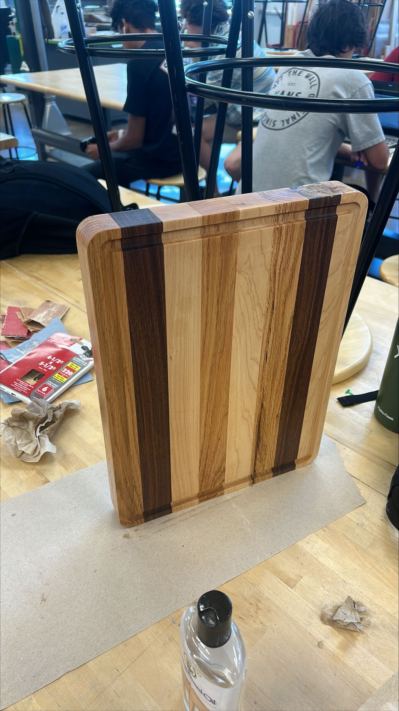
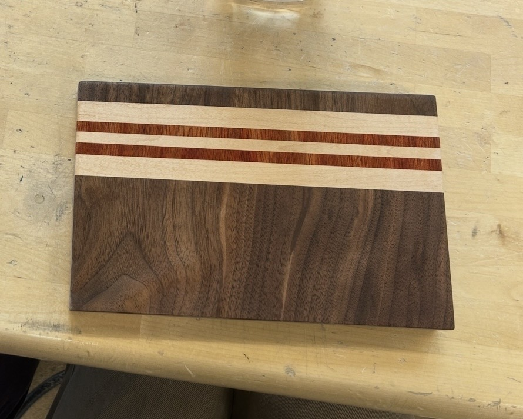

WOODWORKING
FROM INSTRUMENTS TO KITCHEN BOARDS. MOST OF WHAT I BUILD STARTS WITH A PILE OF HARDWOOD, A DRAWING, AND A QUESTION ABOUT HOW THE GRAIN, THE JOINTS, AND THE MACHINES WILL GET ALONG.

VERSION 1

VERSION 2
01 / MAPLE + WALNUT
Eight-string guitars
The biggest woodworking projects I have taken on: two fully custom guitars, designed in CAD and machined on a CNC. The first pairs maple wings with a walnut and maple laminated core. The second is stained purple, with a maple neck.
READ THE FULL STORY →
02 / SKIS + STAINED LUMBER
Ski bench
A bench built from old skis. Three skis stack up as the backrest and three more make the seat, all mounted on a dark-stained lumber frame with a lower stretcher tying the legs together. A way to keep worn-out skis in use.

03 / WALNUT
Cover plates + knobs
Cavity covers and control knobs for the guitars, carved with mountain and compass designs. A chance to try finer detail work and to test how walnut takes a shallow carve.

04 / WALNUT + MAPLE
Checkerboard lamp
A round lamp base built from alternating walnut and maple blocks, with the socket and wiring set into the center.

END-GRAIN EDGE + JUICE GROOVE

STRIPED SERVING BOARD
05 / OAK, MAPLE, WALNUT, PADAUK
Cutting boards
Glue-ups where the pattern comes from the species: dark walnut, pale maple, and a thin red line of padauk. The larger board gets a routed juice groove and rounded corners, and both get a food-safe oil finish.